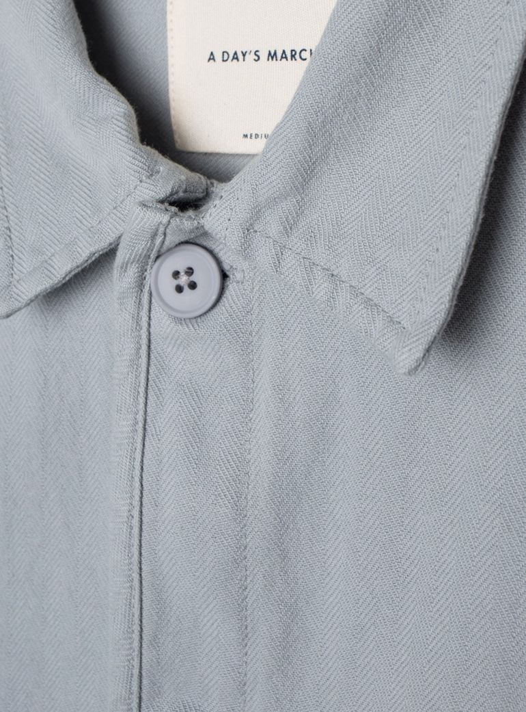
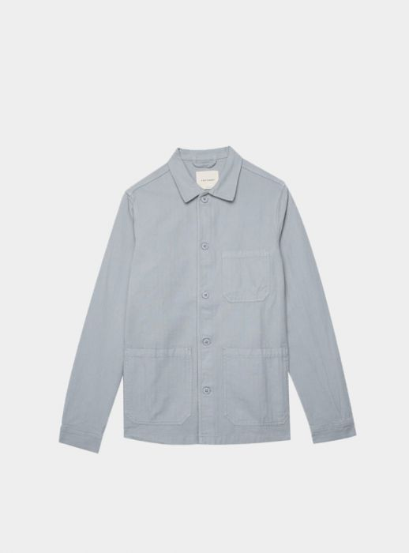
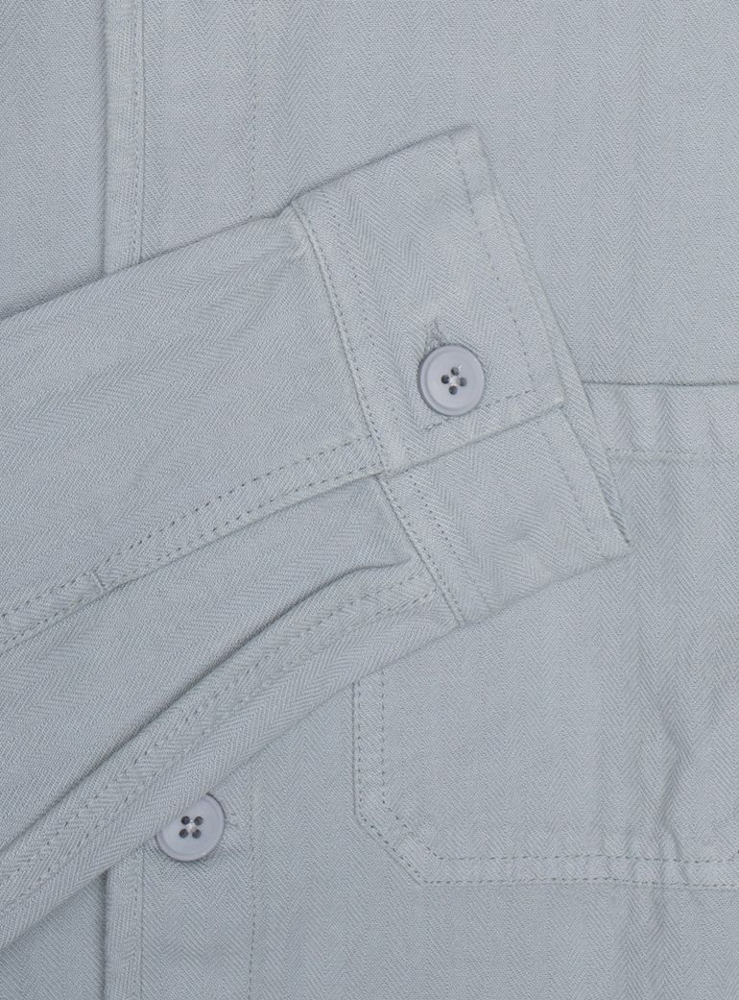

A Day’s March is a Swedish menswear label founded in 2014 by Marcus Gårdö, Pelle Lundquist and Stefan Pagreus that offers clean-cut basics and high-quality wardrobe staples at a friendly price. Their focus for each item in their collection is quality, not quantity. They would rather produce one exceptional item than three mediocre ones. The company also doesn’t sell in any other stores than their own, completely wiping out the middlemen. This allows them to sell their products at a better price without sacrificing quality. This is a company that really appreciates style and creates pieces that are timeless. If you’re contemplating whether or not to make your first purchase, I have reviewed one of their items below.
I just recently was gifted their Overshirt Herringbone in Storm Grey with it being my first product of theirs to own. I’ve since purchased a couple more items from their website including a Fine Twill Unconstructed Jacket and Fine Twill Trouser, both in Navy. What I can say about this brand is that they seem to really pay attention to the fine details and tailoring of their products. I was a little hesitant on getting the color overshirt that I did but after receiving it I think it is their best color in their collection. My initial reaction was a heavy Nordic inspiration. In person, it is a very muted grey with a subtle hint of blue. It is the perfect color for a rainy or dreary day. The fit also couldn’t be any better. I tend to lean on the shorter side of average and typically have a hard time fitting into a small in jackets, overcoats, and overshirts. This is why European brands are usually my go to for these items. Unfortunately, Storm Grey is no longer in stock, but hopefully they will release some new products in this color in the future. If you’d like to check out the Overshirt Herringbone by A Day’s March, head over to my Essentials page here.
  